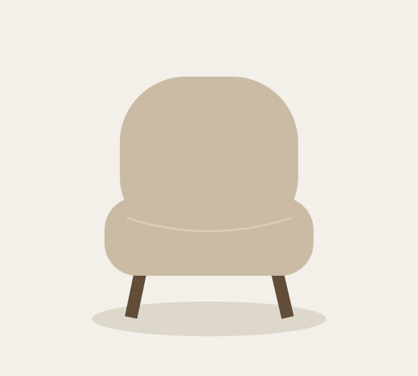

Original illustrative product image, not a photograph.
A NEW PERSPECTIVE ON COMFORT
Marlow upholstered swivel chair
$349.00
A rounded silhouette, a generous seat and soft woven texture. A little retreat for reading, conversation or doing nothing at all.
Local demonstration only. No stock, purchase or fulfillment claim.
Read our demo return guideA closer look
Details & dimensions
Fictional woven upholstery, wood base and swivel design. Illustrative dimensions: 31 inches wide × 33 inches deep × 30 inches high.
Care & materials
Demo care guidance: use a soft dry cloth and avoid direct heat. This is sample product content.